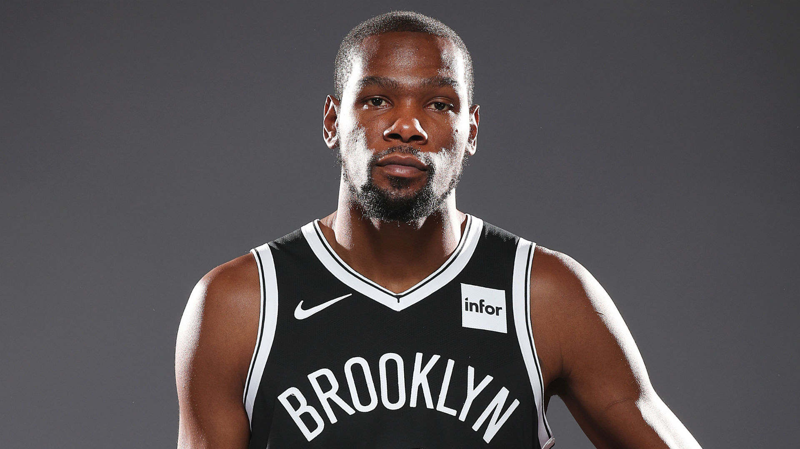

KD Could Miss Multiple Games
- 
Brooklyn Nets star Kevin Durant may be forced to miss more games because of the NBA's COVID-19 protocols.
Per ESPN's Malika Andrews and Adrian Wojnarowski, Durant won't travel with the team for Saturday's game at the Philadelphia 76ers and could miss "multiple games" while undergoing contact tracing.
Durant was scratched from the starting lineup shortly before tipoff of Friday's 123-117 loss to the Toronto Raptors, but he was cleared to enter the game in the first quarter.
After playing 19 minutes, Durant was told he had to leave the bench area.
NBA spokesman Tim Frank said in a statement that Durant had close contact with someone who tested positive for COVID-19:
"Under the league's health and safety protocols, we do not require a player to be quarantined until a close contact has a confirmed positive test. During the game, a positive result was returned for the person Durant interacted with. ... Once that test was confirmed positive, out of an abundance of caution, Durant was removed from the game."
Frank noted Durant returned three negative tests in the past 24 hours, "including two negative PCR tests Friday."
Per NBA protocols, contact tracing "may require players and team staff to undergo five consecutive days of twice-a-day lab-based testing, in addition to daily point-of-care tests," per Wojnarowski and Tim Bontemps.
Durant missed three straight games from Jan. 5-8 because of COVID-19 protocols. The Nets have a road game against the Detroit Pistons on Tuesday before they host the Indiana Pacers on Wednesday.
Source